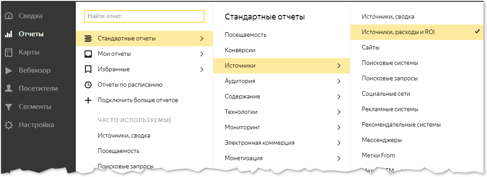

Как загружать данные о расходах, офлайн-конверсиях и звонках в Яндекс Метрику
Весной 2020 года в Яндекс Метрике появился отчёт «Источники, расходы и ROI». Отчет автоматически посчитает ROI по всем рекламным источникам, при одном условии: вам необходимо передать в Метрику всю информацию для расчетов.
Информацию по доходу необходимо передавать либо через ценность цели, либо через Ecommerce.
Данные по расходу на рекламу необходимо импортировать в Метрику через ручную выгрузку из рекламных кабинетов в csv и редактирование данных для придания им нужной структуры, либо используя платные сервисы.
В этой статье мы разберемся, как бесплатно загружать в Яндекс. Метрику расходы, офлайн-конверсии и данные о звонках с помощью языка R и пакета rym.
Поскольку рекламных кабинетов, сервисов коллтрекинга и CRM систем существует достаточно много, в этой статье мы не будем останавливаться на том, как получить данные из нужных источников для загрузки в Метрику. Поэтому я приведу ссылки на некоторые статьи, которые помогут вам разобраться с тем, как запрашивать данные из популярных источников с помощью языка R:
- Как загрузить статистику рекламных кампаний из API Facebook с помощью языка R;
- Что такое язык R и как работать с API рекламных систем Google AdWords и Яндекс. Директ с его помощью;
- Как перенести данные из ВКонтакте в Power BI;
- Как с помощью языка R и MongoDB выгрузить данные из источника со сложной структурой (Работа с API RetailCRM);
- Как выгрузить данные по звонкам из Calltouch используя API и язык R?
- Выгрузка данных из API Calltouch используя R.
На самом деле почти для любого источника данных можно найти готовый пакет на R, поэтому в этой статье я акцентирую внимание на загрузке данных в Яндекс. Метрику.
Кстати, ранее я уже рассказал в одной из статей и вебинаре о том, как на языке R запрашивать данные из Яндекс Метрики.
Подготовка к работе
Установка ПО
Чтобы повторить всё, что описано в данной статье, надо установить необходимое программное обеспечение:
Процесс установки не должен вызвать у вас трудностей, но по необходимости вы можете посмотреть подробный видеомануал по установке.
Установка пакета
Пакет rym можно установить из основного репозитория CRAN.
Откройте RStudio, и выполните команду install.packages(“rym”).

Для выполнения какой-либо команды в RStudio, установите курсор в нужную строку кода и нажмите Ctrl+Enter.
После установки пакета его необходимо подключить командой library(rym), после чего вам станут доступны все функции.
Опции и авторизация
При первом запуске любой из функций пакета rym автоматически запустится процесс авторизации.
В каждой из функций пакета вам доступны аргументы login и token_path.
Аргумент token отвечает за учетную запись в Яндексе, под которой доступны нужные вам счётчики. Аргумент token_path управляет папкой, в которой будут храниться файлы с учетными данными для работы с API Яндекс. Метрики.
Перед началом работы рекомендую задать описанные выше параметры с помощью опций:
library(rym)
# опции
options(rym.user = "ваш логин",
rym.token_path = 'D:/rym_tokens')
# авторизация
rym_auth()
Команда rym_auth() запускает процесс авторизации. Вы сразу попадете в браузер для предоставления необходимых разрешений пакету rym, после чего увидите страницу, где для вас будет сгенерирован код авторизации. Скопируйте его, и вставьте в RStudio в качестве ответа на запрос «Enter authorize code:».
На запрос: «Do you want save API credential in local file (D:/rym_tokens/selesnow.rymAuth.RData), for use it between R sessions?» — ответьте «y», чтобы сохранить полученные учетные данные в локальный файл и в будущем больше не проходить авторизацию через браузер.
Загрузка данных о расходах в Яндекс. Метрику
Для загрузки информации о расходах необходимо:
- Запросить информацию из нужного источника.
- Привести полученные данные к нужному для загрузки виду.
- Загрузить преобразованные данные в Яндекс. Метрику.
Первые два шага мы пропускаем, они будут индивидуальны для каждого источника, но статьи в начале этого поста помогут вам разобраться с первым шагом.
Второй шаг удобно выполнить с помощью пакета dplyr. Детали — в бесплатном курсе «Язык R для пользователей Excel».
Формат данных для загрузки расходов
Перед отправкой вам необходимо привести данные к следующему виду:
Обязательные поля:
- Date — строка, дата в формате YYYY-MM-DD или диапазон дат в формате YYYY-MM-DD/YYYY-MM-DD.
- UTMSource — строка, значение метки utm_source.
- Expenses — число, сумма, которая была потрачена на рекламу без учета НДС. Десятичным разделителем является точка.
Необязательные поля:
- UTMMedium — строка, значение метки utm_medium.
- UTMCampaign — строка, значение метки utm_campaign.
- UTMTerm — строка, значение метки utm_term.
- UTMContent — строка, значение метки utm_content.
- Currency — строка, трехбуквенный код валюты по ISO 4217.
- Clicks — число, количество кликов по рекламным объявлениям.
Тестовый набор данных для загрузки вы можете создать с помощью кода:
# данные для загрузки
expense <- data.frame(Date = c("2020-06-01",
"2020-06-02"),
UTMSource = c("test_s_1",
"test_s_2"),
Expenses = c(88.12,
92.11),
UTMMedium = c("cpc",
"cpm"),
UTMCampaign = c("camp1",
"camp2"),
UTMTerm = c("term1",
"term2"),
UTMContent = c("cont1",
"cont2"),
Currency = c("RUB",
"RUB"),
Clicks = c(11, 15))
Загрузка расходов
Для загрузки расходов в пакете rym существует три функции:
- rym_upload_expense() — загрузка расходов в Яндекс. Метрику;
- rym_delete_uploaded_expense() — удаление данных о расходах из Яндекс. Метрики;
- rym_get_uploadings_expense() — список загрузок расходов.
Обязательные аргументы, которые вам необходимо указывать при использовании перечисленных функций:
- counter — номер счётчика, в который необходимо загрузить данные;
- data — data.frame с информацией о расходах на рекламу, которые требуется загрузить в Яндекс. Метрику.
Отправляйте данные в Метрику с помощью кода:
# отправка данных в Яндекс.Метрику
rym_upload_expense(counter = номер_счётчика,
data = expense)
Пример кода для удаления загруженных данных:
# Удаление данных из Яндекс.Метрики
rym_delete_uploaded_expense(counter = номер_счётчика,
data = expense)
Список загрузок вызывается по команде:
# получение списка загрузок
loaded <- rym_get_uploadings_expense(counter = номер_счётчика)
Спустя некоторое время загруженные данные будут в отчете «Источники, расходы и ROI».

Также можете посмотреть видеоурок о том, как импортировать информацию о расходах из Facebook в Яндекс Метрику с помощью пакета rym.
Загрузка офлайн-конверсий в Яндекс. Метрику
Алгоритм действий для загрузки офлайн-конверсий схож с загрузкой расходов, но есть несколько дополнительных шагов:
- Включите учёт офлайн-конверсий для нужного счетчика.
- Создайте в Метрике цель, в которую мы будем передавать офлайн-конверсии.
- Запросите данные об офлайн-конверсиях из первоисточника. Это может быть CRM система, база данных или просто файл Excel.
- Приведите цифры к нужному для загрузки формату.
- Загрузите данные в Яндекс. Метрику.
Включить учёт офлайн-конверсий можно в веб-интерфейсе Метрики, пройдя по пути: «Настройка» — «Загрузка данных». Либо с помощью специальной функции:
# оффлайн конверсии
rym_enable_offline_conversion(номер_счётчика)
Учтенный Метрикой визит можно дополнить информацией о конверсии в течение 21 дня. Период учета конверсий увеличивается постепенно с момента включения опции.
Проверить, за какой период вам доступна загрузка офлайн-конверсий, можно с помощью функции rym_allow_offline_conversion().
# проверка можно ли загружать данные и за какой период
rym_allow_offline_conversion(номер_счётчика)
Создание цели в метрике
Цель можно создать в веб-интерфейсе, или с помощью функции rym_add_goal():
создаём цель
rym_add_goal(номер_счётчика,
name = ‘Заказ оплачен’,
type = ‘action’,
conditions = list(type = ‘exact’,
url = ‘order_confirmed’))
Можно использовать ранее созданную цель, если конверсия по этой цели совершается на сайте и вне его, и вы хотите получить общую статистику.
Формат данных для загрузки офлайн-конверсий
Информацию по офлайн-конверсиям надо привести к единому виду.
Обязательные поля
- UserId | ClientId | Yclid — идентификатор посетителя сайта или рекламной кампании в Директе (пример: 12345).
- Target — идентификатор цели, заданный при создании цели (пример: order_confirmed).
- DateTime — время, в которое произошла конверсия в формате Unix Time Stamp. Указывайте время в часовом поясе UTC+0 (пример: 1481718166).
Необязательные поля
- Price — ценность цели (пример: 1000).
- Currency — трехбуквенный код валюты по ISO 4217 (пример: RUB).
Пример готового для загрузки файла можно скачать из официальной справке.
Загрузка оффлайн конверсий
Когда ваши данные будут соответствовать требуемому формату, вы сможете отправить их в Яндекс. Метрику.
# загрузка оффлайн конверсий
rym_upload_offline_conversion(номер_счётчика,
data = conv_data,
client.id.type = "CLIENT_ID",
login = 'yandex_login')
Получите список загрузок:
# список загрузок
uploads <- rym_get_uploadings_offline_conversions(
counter = номер_счётчика,
login = 'yandex_login')
Загрузка информации о звонках в Яндекс. Метрику
Для загрузки информации о звонках в пакете rym присутствуют следующие функции:
- rym_enable_calls() — включить учёт звонков;
- rym_disable_calls() — выключить учёт звонков;
- rym_allow_calls() — возвращает дату и время, начиная с которого звонки могут быть привязаны к визитам для указанного счетчика;
- rym_upload_calls() — загрузка информации о звонках в Яндекс. Метрику;
- rym_get_uploadings_calls() — возвращает список загрузок звонков.
Изначально вам необходимо включить учёт данных о звонках в Метрике. Сделать это можно либо в веб-интерфейсе, либо с помощью функции rym_enable_calls(), а с помощью rym_allow_calls() легко узнать, с какого момента вы можете дополнять данные о визитах информацией о звонках.
# учёт звонков
rym_enable_calls(номер_счётчика,
login = 'yandex_login')
# проверка можно ли загружать данные и за какой период
rym_allow_calls(номер_счётчика,
login = 'yandex_login')
Формат данных о звонках для загрузки в Яндекс. Метрику
Перед загрузкой вам необходимо привести информацию к следующему виду.
Обязательные поля
- UserId | ClientId | Yclid — идентификатор посетителя сайта или рекламной кампании в Директе (пример: 12345).
Необязательные поля
- StaticCall — является ли звонок статическим (1 — статический, 0 — динамический).
- Price — цена цели, десятичный разделитель точка (.);
- Currency — валюта в трехбуквенном формате ISO 4217;
- PhoneNumber — номер телефона без пробелов (с указанием кода страны и города). Например, +70123456789;
- TalkDuration — длительность звонка в секундах;
- HoldDuration — длительность ожидания звонка в секундах;
- CallMissed — пропущен ли звонок (1 — пропущенный, 0 — отвеченный);
- Tag — произвольная метка. Может использоваться для отметки качества звонка или рассказывать о результатах. Например, «клиента не устроила цена»;
- FirstTimeCaller — первичность (1 — первичный звонок, 0 — вторичный звонок);
- URL — URL, с которого был звонок (ассоциированная с событием страница). Например, это может быть лендинг для рекламной кампании, на котором указан номер телефона (PhoneNumber);
- CallTrackerURL — URL перехода в интерфейс коллтрекера.
Загрузка данных о звонках
Когда у данных нужный формат, вы можете отправить их в Яндекс. Метрику:
rym_upload_calls(номер_счётчика,
data = conv_data,
client.id.type = "CLIENT_ID",
login = 'yandex_login')
Получить список всех загрузок можно с помощью кода ниже:
uploads <- rym_get_uploadings_calls(
counter = номер_счётчика,
login = 'yandex_login')
Выводы
Дополнив данные о визитах информацией о расходах на рекламу, офлайн-конверсиях и звонках, вы сможете оценить отдачу от рекламных кампаний и правильно рассчитать ROI.
Готов ответить на все вопросы в комментариях.